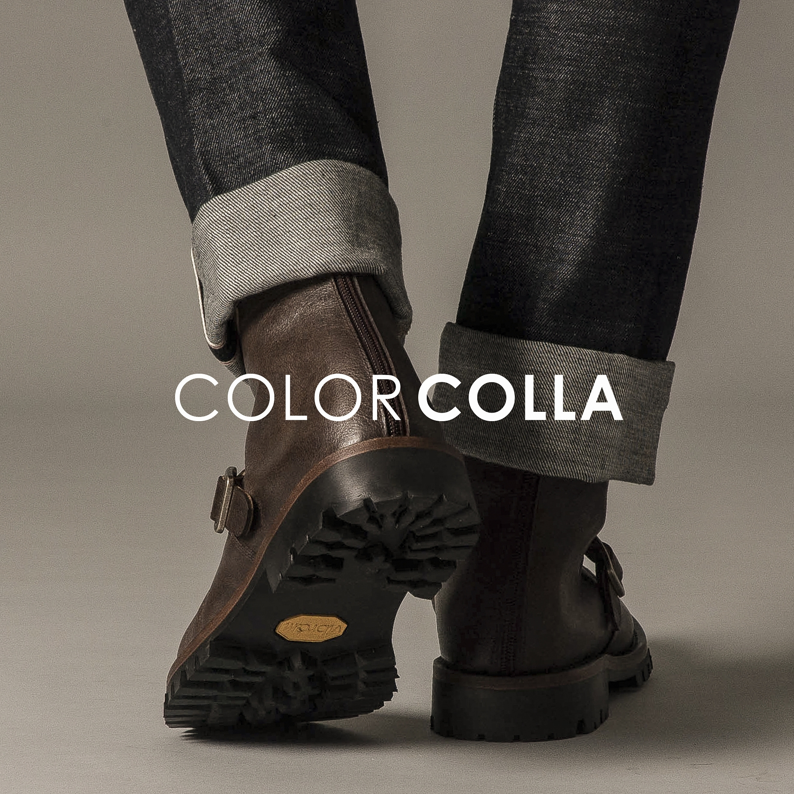

SOLD OUT은 유성재, 유재현, 이창현이 2018년 10월에 설립한 한국 법인으로 공식 명칭은 솔드아웃코리아 이다. 큰 자본으로 시작하지 않았지만 회사명과 같이 사칙이 완판으로 정해둘 만큼 자신감을 기반으로 하여 거짓없는 장사를 하면서 굉장히 좋은 이미지로 승승장구하는 추세이다. 올해 상반기 하반기를 통틀어 한국신발브랜드 10위안에 등재하는 화려한 커리어를 남기기도 했다. 현재 대표이사 유성재는 인천 한국폴리텍대학교에 재학중인 학생으로 알려진 바가 있어 더욱 주목을 받고있다. 학업과 사업을 병행하는 사업자는 국내에 손꼽을 정도로 적으므로 많은 이들의 이목을 끌 수밖에 없는 사실이다. 창업자 3명을 중심으로 설립한 이 회사는 현재 직원이 100명에 이를정도로 찬란한 성장을 하였으며 매 분기마다 5억원 이상 흑자를 낼 정도로 아이템의 기반이 튼튼하다. 타사와 달리 SOLD OUT은 자신들만의 이름으로 신발을 내기도 한다. 시즌별로 나오는 상품이라 한정판이고 가격대가 상당한 편이다. 그럼에도 인기가 좋은 이유는 아마 상품의 질이 좋기 때문일 것이다. 전국에 점포는 수도권(서울, 인천, 경기도)을 중심으로 각 광역시마다 한 개씩 있으며 추후 점포를 더 설립할 예정이라고 한다.